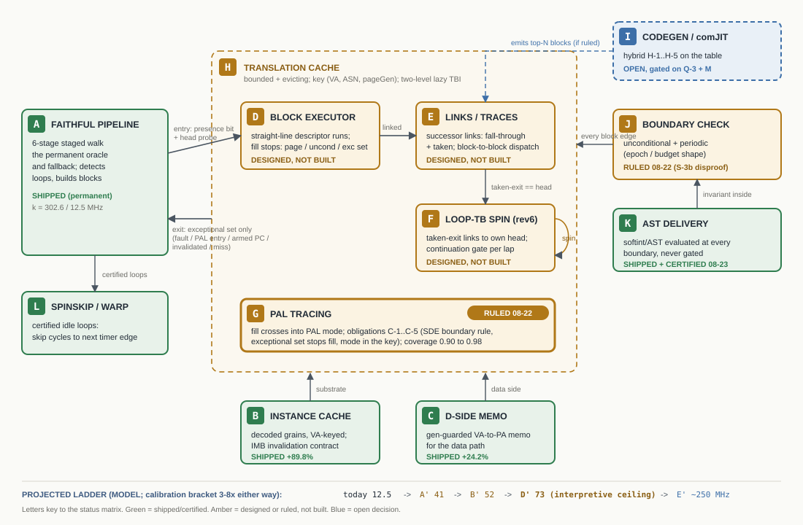

|
<< Click to Display Table of Contents >> Navigation: 9. Performance > Acceleration Program Status |
This topic is the one-page map of the execution-acceleration program: what is implemented, what is designed but not built, what is ruled, and what remains an open decision. Each lettered box in the diagram references the matching row of the component status matrix below.

Ref |
Component |
Status |
Recorded in |
Projected effect |
|---|---|---|---|---|
A |
Faithful staged pipeline |
SHIPPED (permanent oracle and fallback) |
PipelineDriver; SPEC-BATCH-001 Sec 3 |
Baseline: k = 302.6, 12.5 MHz |
B |
Decoded instance cache |
SHIPPED + certified 2026-08-21 (+89.8%) |
SPEC-BATCH-001 Sec 2.2 / 5.2 |
In the baseline |
C |
Data-side translation memo |
SHIPPED + certified 2026-08-21 (+24.2%) |
SPEC-BATCH-001 Sec 5.3 |
In the baseline |
D |
Block executor (unlinked batches) |
DESIGNED, not built |
SPEC-BATCH-001 Sec 2.3; SPEC-TC-001 Sec 1 |
A' ~41 MHz |
E |
Successor links / traces |
DESIGNED, not built (header link slots from day one) |
SPEC-TC-001 D-1, Sec 3.5 |
B' ~52 MHz |
F |
Loop-TB spin (rev6) |
DESIGNED, not built (a block whose taken-exit links to its own head) |
rev6 design note; SPEC-BATCH-001 Sec 7.6 |
Folds into E; gain is fill and footprint |
G |
PAL tracing |
RULED 2026-08-22 (Q-1), not built; obligations C-1..C-5 |
SPEC-TC-001 Sec 7 |
D' ~73 MHz (interpretive ceiling) |
H |
Translation cache + lazy TBI invalidation |
DESIGNED, not built (generation-stamp family already shipped in B and C) |
SPEC-BATCH-001 Sec 7.4 |
Enables D through F |
I |
Codegen / comJIT |
OPEN DECISION, gated on Q-3 and the M measurement; hybrid shapes H-1..H-5 |
SPEC-TC-001 Sec 9 / 10 |
E' ~250 MHz |
J |
Block-boundary check |
RULED 2026-08-22: unconditional and periodic; never a conditional event gate |
SPEC-TC-001 Sec 8.2 / 11.6 |
S_movable 50-72 cycles per retire |
K |
AST / softint delivery hoist |
SHIPPED + certified 2026-08-23 (A-1a byte-identical; A-1b active) |
JRN-V2-ASTGATE-001 |
Correctness invariant |
L |
SpinSkip / coherent warp |
SHIPPED (existing) |
UDELAYWARP family; hybrid H-1 |
Skips cycles (ranked above TB) |
Projection caveat: all MHz figures are MODEL values from SPEC-TC-001 Sec 4; the recorded calibration bracket is 3-8x in either direction, and the sign is not guaranteed.
Measurement |
Status |
|---|---|
P0-1 cadence twins (S_movable) |
DONE 2026-08-22: 50-72 cycles/retire, saturates by N=8 |
P0-2 trace shape (W1 / W2 windows) |
DONE 2026-08-22: N_eff ~11-13, loop coverage 86%, footprint stable |
ASTGATE acceptance A-1a / A-1b |
DONE 2026-08-23: extraction byte-identical; ungated call sites proven active |
W3: Rdb steady-state trace window |
OWED |
M: memory-op residue inside the 22-cycle bench floor |
OWED - highest-value outstanding number; bounds what codegen can deliver |
A-2: cost of the every-retire softint test (fixed-work bench) |
OWED - quiet host |
A-3: post-hoist modulus ladder (rules IRQMOD-001) |
OWED - quiet host; all pre-hoist ladder numbers are history, not the curve |
R-HOSTCAL-070: H_fixed compile overhead in isolation |
OWED - before any emission decision |
Item |
Disposition |
|---|---|
S-3b conditional event gate |
Built and removed 2026-08-22: self-referential (the gate tested a condition its own body computes); SPEC-TC-001 Sec 11 |
Per-opcode JIT |
Rejected 2026-08-21 on measurement: handler bodies are the smallest cost band; SPEC-BATCH-001 Sec 7.3 |
Store-watch (MemoryWatcher) |
Disposed 2026-08-21: the IMB contract is the coherency point; survives as a diagnostic and as the reclamation index; SPEC-BATCH-001 Sec 7.5 |
Host guard-page traps |
Parked 2026-08-22: SEH on the hot path, determinism and snapshot complications; SPEC-TC-001 Sec 8.3 |
See Also.
Design canon: journals/20260716_vector_dispatch_tb_region_design_rev6.md; journals/specs/SPEC-BATCH-001.md; journals/specs/SPEC-TC-001.md; journals/20260821_performance_canon_index.md.